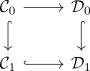
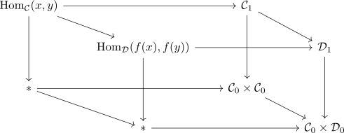

monomorphisms in category Cat
Proposition
Let $\mathcal{F}: \mathcal{C} \rightarrow \mathcal{D}$ be a functor TFAE:
- $\mathcal{F}$ is a monomorphism in category Cat
- $\mathrm{Hom}_{\mathrm{Cat}}([n], \mathcal{F})$ is a monomorphism in anima
- $\mathcal{F}$ is a monomorphism on the groupoid core and $\mathrm{Ar}(\mathcal{C})^{\simeq} \rightarrow \mathrm{Ar}(\mathcal{D})^{\simeq}$ is a monomorphism, that is a monomorphism in the category of Anima (cf. monomorphisms in Anima).
- $\mathcal{F}$ is a monomorphism on $\mathrm{Ar}(\mathcal{C})^{\simeq}$
- $\mathcal{F}$ is a monomorphism on the groudoid core (that is, an injection on $\pi_0$ and isomorphism on all higher homotopy groups) and a faithful functor, that it $\mathrm{Hom}_{\mathcal{C}}(x,y) \rightarrow \mathrm{Hom}_{\mathcal{D}}(f(x),f(y))$ is a monomorphism in anima
Proof
we use the description of cat as category of complete segal Anima (cf. category of complete segal anima is equivalent to the category Cat), which is closed under limits in the presheaf category (cf. limits in a bousfield localization)
1) $\implies$ 2)
monomorphisms in functor categories & $\mathrm{csAn}$ is closed under limits.
2) $\implies$ 3)
follows from:
- monomorphisms in the category of segal objects
3) $\implies$ 4)
- follows as by completeness of the segal anima, we have a diagram

where the vertical and bottom horizontal morphisms are monomorphisms. Hence so is the top horizontal morphism.
4) $\implies$ 5)
Hom of a complete segal Anima

and use limit of monomorphisms is a monomorphism
5) $\implies$ 1)

consists of pullback diagrams. where the map $\mathcal{C}[n] \rightarrow \mathcal{D}[n]$ is a monomorphism (cf. limit of monomorphisms is a monomorphism and induction).